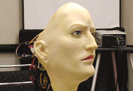
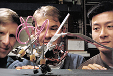

Computern ein menschliches Gesicht geben: K-Bot ist die Schöpfung von David Hanson, an der Universität von Texas-Dallas. Der Androiden-Kopf besitzt Kameras hinter seinen Augen, die den Bewegungen des Gegenübers folgen. Spezielle Software steuert kleine Motoren und mech. Muskeln unter der künstlichen Haut, welche die Mimik des anderen nachahmen. "Wenn man bisherige Komponenten Künstlicher Intelligenz mit K-Bot kombiniert, wird der Begriff 'Androide' bald Wirklichkeit." Von der Natur lernen: Robotik-Labors in Stanford, geleitet von Mark Cutowsky, studieren und imitieren insektoide Lebensformen. Sie haben sechsfüßige Roboter gebaut, ausgestattet mit der komplexen Bewegungs-Mechanik von Küchenschaben. In Umgebungen, die zu klein für Menschen sind, können solche Roboter eingesetzt werden. Prof. Paolo Dario(Italien) und Mark Oliver Schurr(BRD), stellen bei einer Tagung von Chirurgen EMIL vor. EMIL(Endoscopic Microcapsule Locomotion) ist ein 3 cm großer Roboter, der vom Patienten geschluckt wird. Er bewegt sich ähnlich einem Tausendfüßler durch den Darmtrakt. Er hat eine Mikro-Kamera und ein Skalpell, arbeitet ferngesteuert und braucht keine Batterie. EMIL soll bei der Verhütung von Darmkrebs eine wichtige Rolle spielen.